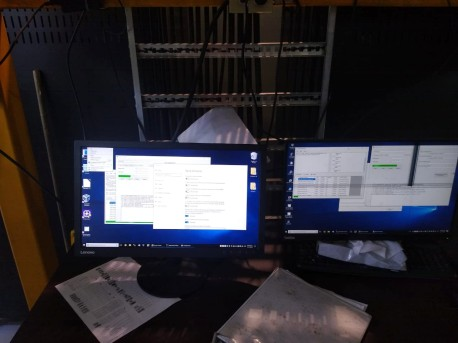
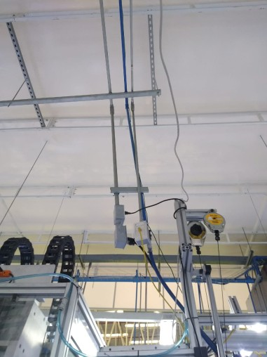
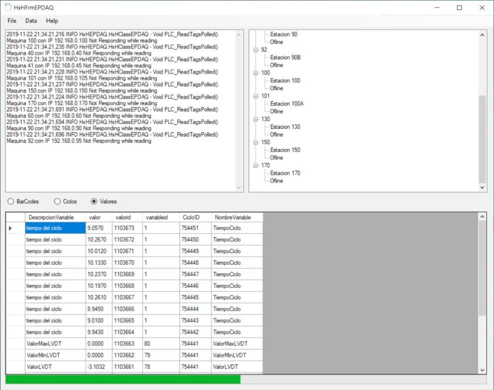
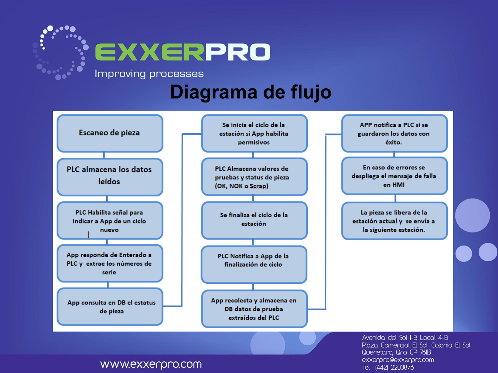

The Line
- Headlamp assembly and test line for a 2019-model-year vehicle, 20 stations, controlled by Siemens S7-1200 PLCs.
- Stations covered label printing, screwdriving, LED module and reflector assembly, LVDT position checks, laser engraving, leak testing, photometric adjustment (Dajac), and final barcode-based part release.
Scope of Work
- Implemented traceability across 2 assembly lines end-to-end.
- Installed and configured the Ethernet network — cable trays, conduit, network cabinet, cable routing and IP addressing for all stations.
- Reprogrammed the station PLCs to capture cycle data and modified the HMIs to add traceability messages and controls.
- Developed a Visual Basic data-acquisition application and a local SQL Server database to store and report on every part.
System Architecture
- Scanner reads the serial number printed on each part's label.
- HMI — station control plus new traceability messages and prompts.
- PLC collects scanner and station cycle data and holds it for transfer to the database.
- Industrial PC runs the custom VB application, communicating with each station's PLC and storing results in a local SQL Server database.
Data-Acquisition Application
- Real-time communication with the S7-1200 PLCs for cycle data.
- Operator interface showing produced-part status, plus a serial-number lookup to inspect any scanned part's history.
- Line-flow control enforced by business rules — a part can't advance if it fails a station's criteria.
- SQL Server storage with spreadsheet report export.




